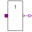
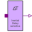
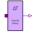

SISOSingle input, single output |
Information
This information is part of the Modelica Standard Library maintained by the Modelica Association.
SISO is a partial model for the connection pattern with single (scalar) digital input and single (scalar) digital output. Besides the connectors it provides a rectangle for the icon which can be filled in by the component which inherits the SISO model.
Connectors (2)
| x |
Type: DigitalInput Description: Connector of Digital input signal |
|
|---|---|---|
| y |
Type: DigitalOutput Description: Connector of Digital output signal |
Extended by (6)
|
Modelica.Electrical.Digital.Gates
BufGate with 1 input value, composed by Not and sensitive inertial delay |
|
|
Modelica.Electrical.Digital.Gates
InvGate with 1 input value, composed by Not and sensitive inertial delay |
|
|  |
Modelica.Electrical.Digital.Basic
Not logic component without delay |
|  |
Modelica.Electrical.Digital.Delay
Provide the input as output if it holds its value for a specific amount of time |
|  |
Modelica.Electrical.Digital.Delay
Inertial delay with initial parameter |
|
Modelica.Electrical.Digital.Delay
Transport delay with initial parameter |